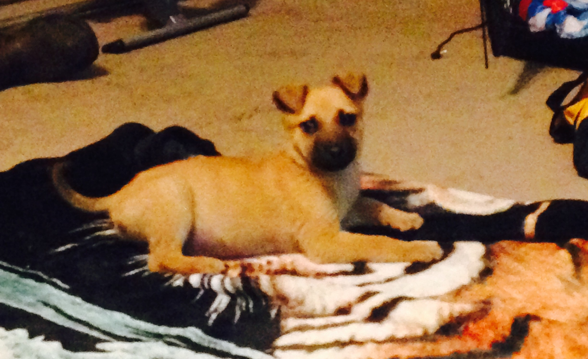
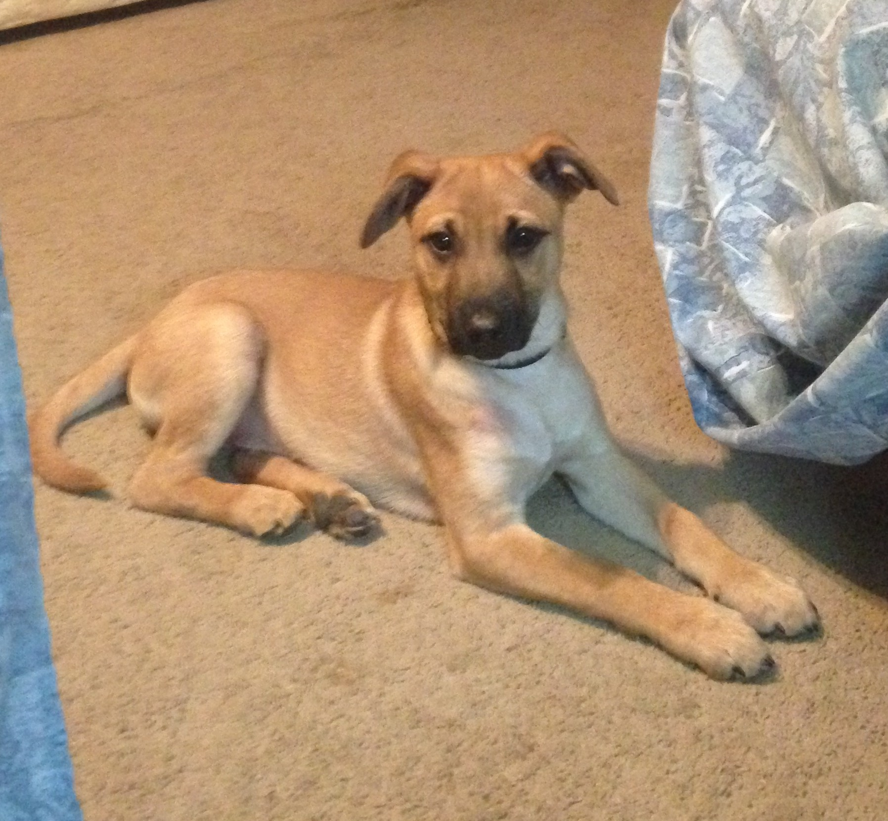
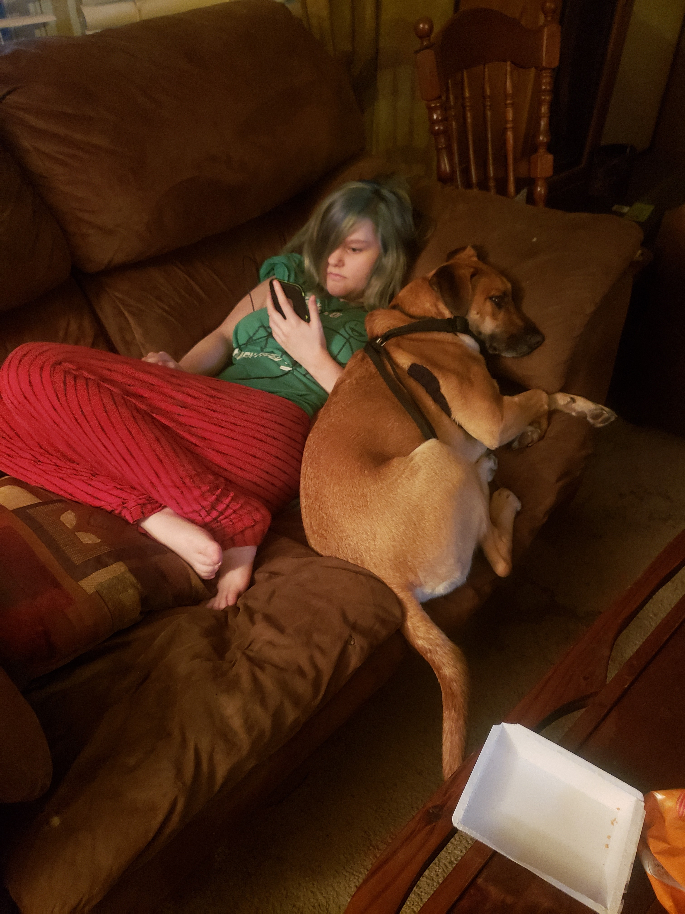

Hershey was robin's childhood dog, but he was more than a dog to her. He was a true friend, he brought her a world of joy and companionship that only he could've brought to her. But she also did the same for him, Robin and Hershey were inseperable, they loved eachother unconditionaly and together they faced the world while bringing light into eachothers lives.
 When Robin got Hershey it brought her a new world of happiness, having him meant a lot to her and she loved him with all her heart. But she did that exact same thing for Hershey too, he loved her as much as she loved him, they forged a bond right away that will last forever. Their bond goes beyond the test of time, even from the outside perspective I have I could see it clear as day they had a love for eachother that wa simply pure.
Watching the way he ran up to her while I went to Mississippi with her you could see the pure joy in his eyes, he was so happy to see her again after all that time apart. It was like they were never apart, their bond was unbreakable and it showed in that moment. Hershey was truly the goodest of boys.
Hershey was a genuinely happy and loyal companion, the joy he brought Robin was only matched by the joy she brought him. They were best friends and nothing will ever change the love they had for eachother. Hershey also had fellow K9 friends as well, Sparky and Shadow were his partners in crime and they loved to play with eachother. When Robin moved to Alabama Hershey had to live with her grandmother and stay behind in Mississippi. But even though they were apart their bond never deminished, he still greeted her with the same love and joy as if she had never left.
Hershey is unfortunetly no longer with us, but he will always be remembered as the loyal and loving companion that he was. The joy and love he brought to those around him will never be forgotten, and his spirit will always live on with those who charished him. Hershey was truly the embodyment of joy and unconditional love, he will be deeply missed but he will never be forgotten.
I made this so you have a way to remember him, and to show I love you more than anything baby.
Forever yours, Kody